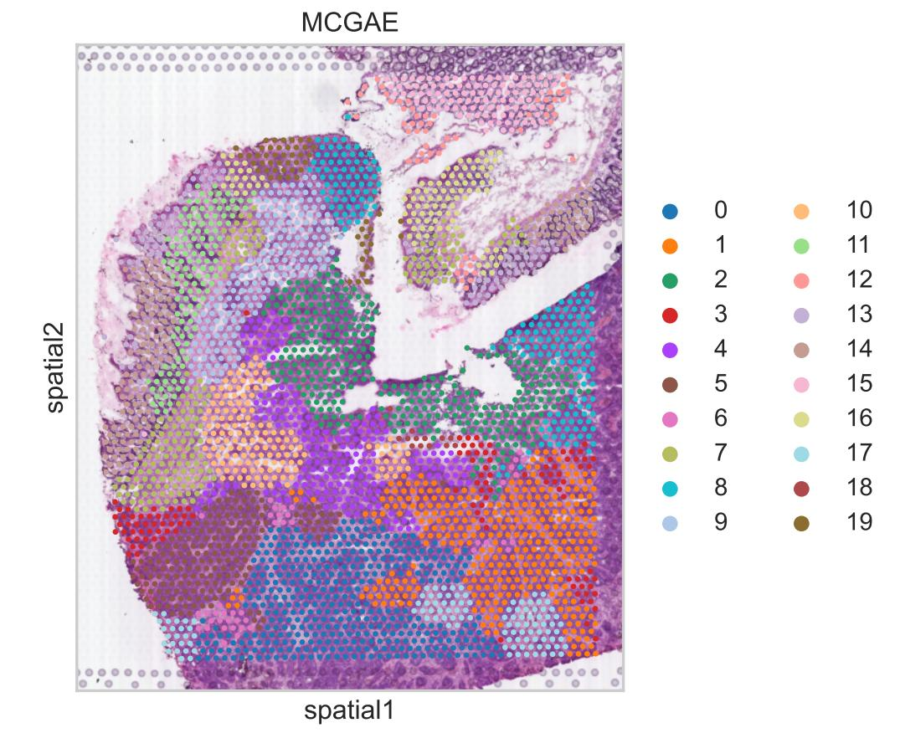

Tutorial 2: MCGAE's spatial clustering of colorectal cancer liver metastasis data elucidated the phenomenon of tumor invasion
Load library
import os
import pandas as pd
import scanpy as sc
import torch
import torch.optim as optim
import torch.nn as nn
import warnings
import matplotlib.pyplot as plt
from sklearn import metrics
from sklearn.metrics.cluster import normalized_mutual_info_score as nmi_score
from sklearn.metrics import adjusted_rand_score as ari_score
from sklearn.cluster import KMeans
import itertools
from MCGAE.model import MCGAE
from MCGAE.utils import load_dataset, norm_and_filter, compute_adata_components, search_res, refine_label, set_seed, \
Moran_I
# Suppressing runtime warnings
warnings.filterwarnings("ignore", category=RuntimeWarning)
Prepare file path
"""
BASE_DIR: Project directory
data_dir: Data directory
result_dir: Result directory
file_path: File path
"""
file_name = "ST-colon1"
BASE_DIR = r"D:\Work\MCGAE project\MCGAE-master"
file_path = os.path.join(BASE_DIR, "benchmark", "Colorectal Cancer", f"{file_name}")
dir_path = os.path.join(file_path, "raw_data")
Extract image information
adata = load_dataset(dir_path, use_image=True)
sc.pp.filter_genes(adata, min_cells=1)
sc.pp.highly_variable_genes(adata, flavor="seurat_v3", n_top_genes=3000)
sc.pp.normalize_total(adata, target_sum=1e4)
sc.pp.log1p(adata)
adata = adata[:, adata.var["highly_variable"]]
n_clusters = 20
print(n_clusters)
Tiling image: 100%|███████████████████████████████████████████████████████████████████████████████ [ time left: 00:00 ]
Extract feature: 100%|████████████████████████████████████████████████████████████████████████████ [ time left: 00:00 ]
The morphology feature is added to adata.obsm['X_morphology']!
20
Graph constructed!
adata.obsm["graph_orig"] = interaction
Compute multiple view components
set_seed(1234)
compute_adata_components(adata, n_components=100)
save_obj_z = pd.DataFrame()
For denoise data training: Epoch [0/100], Loss: 0.0041
For denoise data training: Epoch [10/100], Loss: 0.0006
For denoise data training: Epoch [20/100], Loss: 0.0006
For denoise data training: Epoch [30/100], Loss: 0.0006
For denoise data training: Epoch [40/100], Loss: 0.0006
For denoise data training: Epoch [50/100], Loss: 0.0006
For denoise data training: Epoch [60/100], Loss: 0.0006
For denoise data training: Epoch [70/100], Loss: 0.0006
For denoise data training: Epoch [80/100], Loss: 0.0006
For denoise data training: Epoch [90/100], Loss: 0.0006
Graph_hat constructed!
Train model
model = MCGAE(
adata,
n_latent=50,
n_components=100,
use_pca=True,
# fusion_mode="holistic",
fusion_mode="fractional",
# fusion_mode="vanilla",
use_emb_x_rec=True,
use_emb_g_rec=True,
dropout=0.01, # 0.01
random_seed=12,
w_morph=1.9,
)
model.train(
weight_decay=5e-4,
# weight_decay=0.0,
w_recon_x=0.05,
w_recon_g=0.1,
w_contrast=0.1,
w_cluster=0.1,
n_clusters=n_clusters,
cl_start_epoch=100,
compute_g_loss="cross_entropy",
)
Now the cycle is: 12
Searching resolution...
training: 2%|█▎ | 7/400 [00:00<00:17, 22.04it/s]
Epoch: 0, Loss: 2.7255704402923584
training: 8%|█████▌ | 31/400 [00:00<00:07, 50.33it/s]
Epoch: 20, Loss: 1.2939739227294922
training: 12%|████████▉ | 50/400 [00:01<00:06, 55.35it/s]
Epoch: 40, Loss: 0.9415194988250732
training: 17%|████████████▏ | 69/400 [00:01<00:05, 56.74it/s]
Epoch: 60, Loss: 0.7995103001594543
training: 22%|███████████████▍ | 87/400 [00:01<00:05, 57.74it/s]
Epoch: 80, Loss: 0.7482431530952454
training: 28%|███████████████████▌ | 112/400 [00:02<00:04, 58.68it/s]
Epoch: 100, Loss: 0.7114622592926025
training: 32%|██████████████████████▊ | 130/400 [00:02<00:04, 58.09it/s]
Epoch: 120, Loss: 0.6843234300613403
training: 37%|██████████████████████████ | 149/400 [00:02<00:04, 58.12it/s]
Epoch: 140, Loss: 0.6560841202735901
training: 43%|██████████████████████████████▎ | 173/400 [00:03<00:03, 57.56it/s]
Epoch: 160, Loss: 0.6310422420501709
training: 48%|█████████████████████████████████▍ | 191/400 [00:03<00:03, 57.97it/s]
Epoch: 180, Loss: 0.610443115234375
training: 52%|████████████████████████████████████▌ | 209/400 [00:03<00:03, 58.08it/s]
Epoch: 200, Loss: 0.593916654586792
training: 57%|███████████████████████████████████████▋ | 227/400 [00:04<00:02, 57.91it/s]
Epoch: 220, Loss: 0.5803815722465515
training: 63%|███████████████████████████████████████████▉ | 251/400 [00:04<00:02, 58.28it/s]
Epoch: 240, Loss: 0.5691173076629639
training: 67%|███████████████████████████████████████████████ | 269/400 [00:04<00:02, 58.02it/s]
Epoch: 260, Loss: 0.560197114944458
training: 73%|███████████████████████████████████████████████████▎ | 293/400 [00:05<00:01, 57.74it/s]
Epoch: 280, Loss: 0.5517188310623169
training: 78%|██████████████████████████████████████████████████████▍ | 311/400 [00:05<00:01, 58.08it/s]
Epoch: 300, Loss: 0.5455691814422607
training: 82%|█████████████████████████████████████████████████████████▊ | 330/400 [00:05<00:01, 58.34it/s]
Epoch: 320, Loss: 0.5398231744766235
training: 87%|████████████████████████████████████████████████████████████▉ | 348/400 [00:06<00:00, 57.37it/s]
Epoch: 340, Loss: 0.5346991419792175
training: 93%|█████████████████████████████████████████████████████████████████ | 372/400 [00:06<00:00, 58.27it/s]
Epoch: 360, Loss: 0.5296562314033508
training: 98%|████████████████████████████████████████████████████████████████████▎ | 390/400 [00:07<00:00, 58.23it/s]
Epoch: 380, Loss: 0.5251146554946899
training: 100%|██████████████████████████████████████████████████████████████████████| 400/400 [00:07<00:00, 55.49it/s]
Epoch: 399, Loss: 0.5210220813751221
Analysis of model calculation results
temp = model.get_model_output()
emb, y_pred, emb_rec = temp["emb"], temp["y_pred"], temp["x_rec"]
adata.obsm["z"] = emb
adata.obs["pred"] = y_pred
res = search_res(adata, n_clusters, rep="z", start=0.3, end=3, increment=0.02)
sc.pp.neighbors(adata, use_rep="z", n_neighbors=10, random_state=1234)
sc.tl.leiden(adata, key_added="leiden", resolution=res, random_state=1234)
new_type = refine_label(adata, key='leiden', radius=30)
adata.obs['leiden'] = new_type
sc.pl.spatial(adata, img_key="hires", color='leiden', title="MCGAE")
plt.tight_layout()
Searching resolution...

<Figure size 1920x1440 with 0 Axes>
Data expression after noise reduction
sc.pp.scale(adata, zero_center=False, max_value=1)
adata2 = adata.copy()
adata2.X = emb_rec
sc.pl.spatial(adata, img_key="hires", color="TF", title="TF_raw_Exp", color_map="RdYlGn_r")
sc.pl.spatial(adata2, img_key="hires", color="TF", title="TF_denoise", color_map="RdYlGn_r")
sc.pl.spatial(adata, img_key="hires", color="ALB", title="ALB_raw_Exp", color_map="RdYlGn_r")
sc.pl.spatial(adata2, img_key="hires", color="ALB", title="ALB_denoise", color_map="RdYlGn_r")